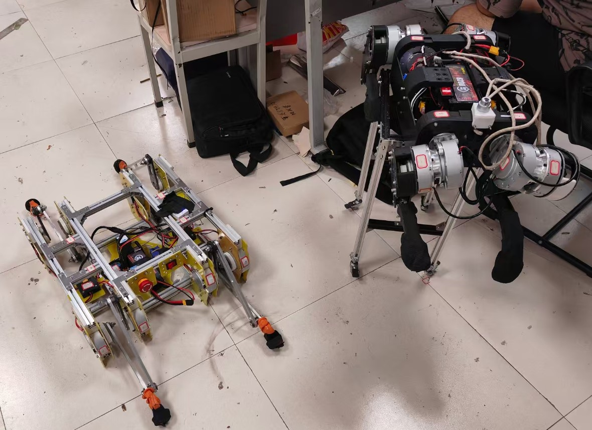

四足机器人
基于STM32F407VET6主控
核心功能：...

关键技术
...
项目图集


Embedded Systems Engineer | STM32 Specialist
基于STM32的四足机器人。采用485总线架构，12个或8个无刷关节模组，通过IMU与编码器数据融合实现身体姿态，遥控器进行控制
设计高精度运放电路，用于微弱生物电信号采集，噪声抑制达60dB。
基于ATSAME70Q21的无人机飞控系统，实现姿态解算与PID控制。
基于STM32F407VET6主控
核心功能：...

高精度生物电信号采集系统，采用三级放大+带通滤波架构，输入阻抗>1GΩ，共模抑制比>100dB，成功应用于心电/肌电信号采集。使用LM358搭建差分放大电路，配合RC滤波网络实现50Hz工频干扰抑制，实测信噪比提升15dB。
基于ATSAME70Q21的四轴飞行器控制系统，实现MPU9250姿态解算（互补滤波+卡尔曼滤波）、PID闭环控制、超声波定高、光流定位。采用RT-Thread实时操作系统管理任务调度，通过nRF24L01实现2.4GHz遥控通信，续航时间达18分钟。